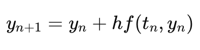
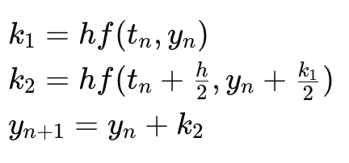
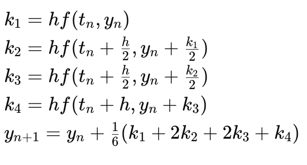

Numerical Methods for Solving ODEs
This documentation provides an overview of numerical methods for solving ordinary differential equations (ODEs) using Python. The methods covered include the Euler method, the second-order Runge-Kutta method (RK2), and the fourth-order Runge-Kutta method (RK4).
Euler Method
The Euler method is a first-order numerical procedure for solving ODEs. It is the simplest Runge-Kutta method.
The formula for the Euler method is:

which is the same as:
y_next = y_current + h * f(t_current, y_current)
where:
y_nextis the approximated solution at the next point.y_currentis the current value of the solution.his the step size.f(t_current, y_current)is the derivative of y att_current.
Second-order Runge-Kutta Method (RK2)
The second-order Runge-Kutta method provides better accuracy than the Euler method.
The formula for RK2 is:

which is the same as:
k1 = h * f(t_current, y_current)
k2 = h * f(t_current + h/2, y_current + k1/2)
y_next = y_current + k2
where:
k1andk2are intermediate increments.y_nextis the approximated solution at the next point.
Fourth-order Runge-Kutta Method (RK4)
The fourth-order Runge-Kutta method is one of the most widely used methods due to its balance between simplicity and accuracy. The formula for RK4 is:

which is the same as:
k1 = h * f(t_current, y_current)
k2 = h * f(t_current + h/2, y_current + k1/2)
k3 = h * f(t_current + h/2, y_current + k2/2)
k4 = h * f(t_current + h, y_current + k3)
y_next = y_current + (k1 + 2*k2 + 2*k3 + k4) / 6
k1,k2,k3, andk4are intermediate increments.y_nextis the approximated solution at the next point.
Reference
For detailed documentation of the functions, visit the Reference Page.
These numerical methods are fundamental for solving ODEs and are widely used in various scientific and engineering applications.